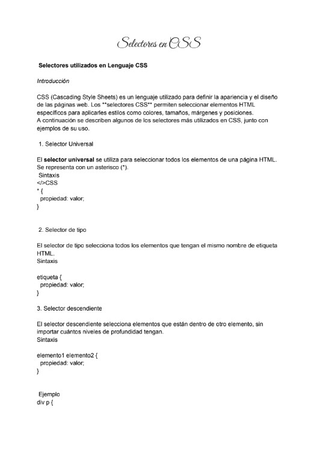

Partes de una página web
La actividad consistió en investigar y elaborar un documento digital en Word o Documentos de Google acerca de las principales partes que conforman una página web. En el trabajo se identificaron y describieron diez elementos fundamentales utilizados en el diseño y estructura de los sitios web, explicando la función e importancia de cada uno dentro de una página. Entre los elementos investigados se encuentran el encabezado, el menú de navegación, las imágenes, el contenido del sitio web, la página de inicio, el pie de página, el logo, los llamados a la acción (CTA), el blog y los formularios. Además de la investigación, se realizó una ilustración o maqueta donde se representó visualmente la ubicación de cada uno de estos elementos dentro de una página web, permitiendo comprender mejor cómo se organizan y distribuyen en un diseño real. Gracias a esta actividad se aprendió la importancia de la estructura y organización de los sitios web, así como la función que cumple cada elemento para mejorar la navegación, la presentación de la información y la interacción con los usuarios.

Selector CSS
La actividad consistió en elaborar un documento digital utilizando Word o Documentos de Google, en el cual se investigaron, describieron y ejemplificaron diferentes selectores utilizados en el lenguaje CSS. En el trabajo se explicó la función y utilidad de cada selector dentro del diseño y personalización de páginas web, mostrando cómo permiten aplicar estilos específicos a distintos elementos de un sitio. Entre los selectores investigados se encuentran el selector universal, selector de tipo, selector descendiente, selector hijo, selector adyacente, selector de atributos, selector de clase y selector ID. Para cada uno se realizó una descripción detallada acompañada de ejemplos de código, con la finalidad de comprender mejor su sintaxis y funcionamiento dentro de las hojas de estilo CSS. Gracias a esta actividad se aprendió la importancia de los selectores en el diseño web, ya que permiten organizar y aplicar estilos de manera más precisa y eficiente. Asimismo, se reforzó el manejo básico del lenguaje CSS y la comprensión de cómo se relaciona con la estructura HTML para mejorar la apariencia y presentación de una página web.